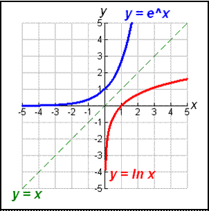
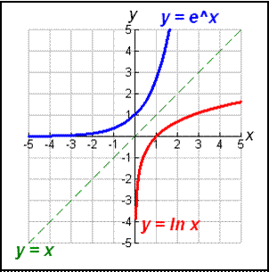

Natural Logarithms
| Exp Function | Ln Function |
|---|---|
| $\html'<span style="color:red;">e</span>'^{\html'<span style="color:green;">x</span>'}=\html'<span style="color:blue;">y</span>'$ | $\html'<span style="color:red;">ln</span>'\html'<span style="color:blue;">y</span>'=\html'<span style="color:green;">x</span>'$ |
| $\html'<span style="color:red;">e</span>'^{\html'<span style="color:green;">4</span>'}≈\html'<span style="color:blue;">54.6</span>'$ | $\html'<span style="color:red;">ln</span>'\html'<span style="color:blue;">54.6</span>'=\html'<span style="color:green;">4</span>'$ |
Natural Log & its Inverse
You switch the x & y to get the inverse of a function, so its graph is a reflection over the line $y=x$

You switch the x & y to get the inverse of a function, so its graph is a reflection over the line $y=x$

Properties of Natural Logs
| Product Property | $\ln{mn}=\ln{m}+\ln{n}$ |
|---|---|
| Quotient Property | $\ln{m/n}=\ln{m}-\ln{n}$ |
| Power Property | $\ln{m^p}=p\ln{m}$ |
| Property of Equality | $\ln{m}=\ln{n}→m=n$ |
Continuously Compounding Interest
$A=P\e^{rt}$
$A=P\e^{rt}$
A = total (or ending) amount
P = initial amount (or principal, if money)
r = growth or decay rate (or interest rate, if money)
t = time
P = initial amount (or principal, if money)
r = growth or decay rate (or interest rate, if money)
t = time
How long will it take a \$3,500 investment to worth \$4,378.75 at an interest rate of 6.4% compounded continuously?
$\table P=\$3\text","500; r=6.4%=0.064; A=\$4\text","378.75$ $\table A=P\e^{rt}; 4\text","378.75=3\text","500\e^{.064t}; {4\text","378.75}/{3\text","500}=\e^{.064t}; \ln{{4\text","378.75}/{3\text","500}}=.064t\ln{\e}(\ln\e=1); {\ln{({4\text","378.75}/{3\text","500}})}/{0.064}=t; 3{1}/2\text"years"≈t$
$\table P=\$3\text","500; r=6.4%=0.064; A=\$4\text","378.75$ $\table A=P\e^{rt}; 4\text","378.75=3\text","500\e^{.064t}; {4\text","378.75}/{3\text","500}=\e^{.064t}; \ln{{4\text","378.75}/{3\text","500}}=.064t\ln{\e}(\ln\e=1); {\ln{({4\text","378.75}/{3\text","500}})}/{0.064}=t; 3{1}/2\text"years"≈t$
Antilogarithm of a Natural Log
$\table \ln{x}=a, x=anti\ln{a}$
$\table \ln{x}=-0.4; x=anti\ln{-0.4}; x=\e^{-0.4}; x≈0.67$
$\table \ln{x}=a, x=anti\ln{a}$
$\table \ln{x}=-0.4; x=anti\ln{-0.4}; x=\e^{-0.4}; x≈0.67$